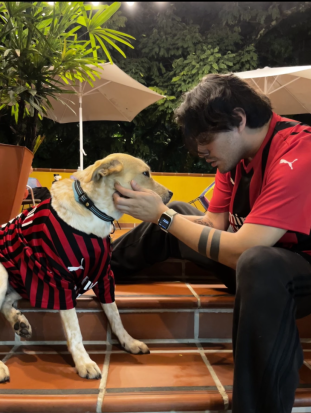

You can vote! Make sure to vote to choose between these candiates:
Chief Chewbacca and Professor Snape:

Chief Chewbacca and Professor Snape are co-runners. Chief Chewbacca and Professor are long time lovers, but also long time policial advocates. Chief Chewbacca's platform is all about puppy bodily autonomy. With having one of his owners forcefully cuddle him, he's learned that speaking up (or borking out) is the only way to make change and call attention to this serious issue. Professor Snapes platform is helping people to realizem that just because your dummy parents name you after a villian it doesn't mean you have to become one. With his himbo attitude you could never think that he was once a follower of he who must not be named. Vote Chief Chewbacca and Professor Snape today if you believe in puppy bodily autonomy and that a name doesn't make a villian.
Porro
The goodest boy
Indy, Dwight, Turbo, Queen Boo

The Grable home is a cat sanctuary for animals from the Oregon Humane Society. Queen Boo has been ruling the domicile for over 10 years. Turbo joined as a loyal subject to Queen Boo's reign roughly one year after her coronation. When I (Jase) married my wife, Queen Boo and Turbo were joined by the late Mr. Cat who is no longer with us. The passing of Mr. Cat led to the introduction of two rebels towards Queen Boo's reign, Dwight "The Fright" Ruecker-Grable and IndyCat500 AKA Princess Indy-bear. Indy is determined to dethrone Queen Boo and will stop at nothing to steal all the food she can from the royal family.
Bow and Arrow

The only way forward